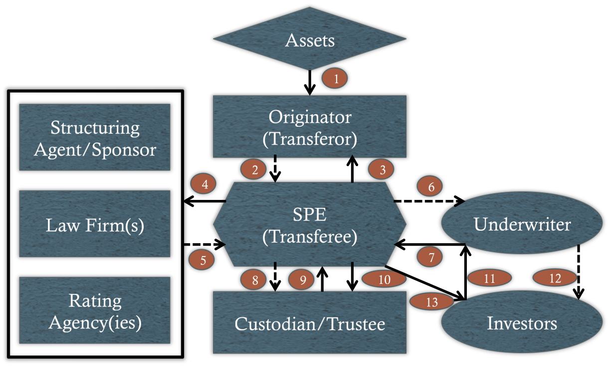

Definition: The process by which a firms sells credit-sensitive assets to a third party that in turn issues securities whose cash flows are backed by the original assets as collateral
Securitization Process

Major Players
Sponsor - institution that initiates the securitization
Originator - original asset owner
Transferee - counterparty to the bilateral asset sale
Trustee - investors' agent
Custodian/Servicer - collects and disburses cash flows
Structuring agent - originator's advisor
Underwriter - markets and distributes the securities issued by transferee
Rating agencies - render assessments of credit quality
Law firms - provide legal counsel
Regulatory agencies
External risk transfer and risk finance counterparties
Consolidation
In order to avoid consolidating the assets back on the originator's balance sheet, a 'true sale' must occur'
Credit Enhancement
Internal:
Direct equity issue
Holdback
Cash collateral account
Excess spread
External:
Insurance, wraps, and guaranties
Letter of credit
Credit default swap
Put option on assets
Liquidity Support
Liquidity risk - risk that underlying assets serving as collateral may not generate enough cash to satisfy P&I obligations